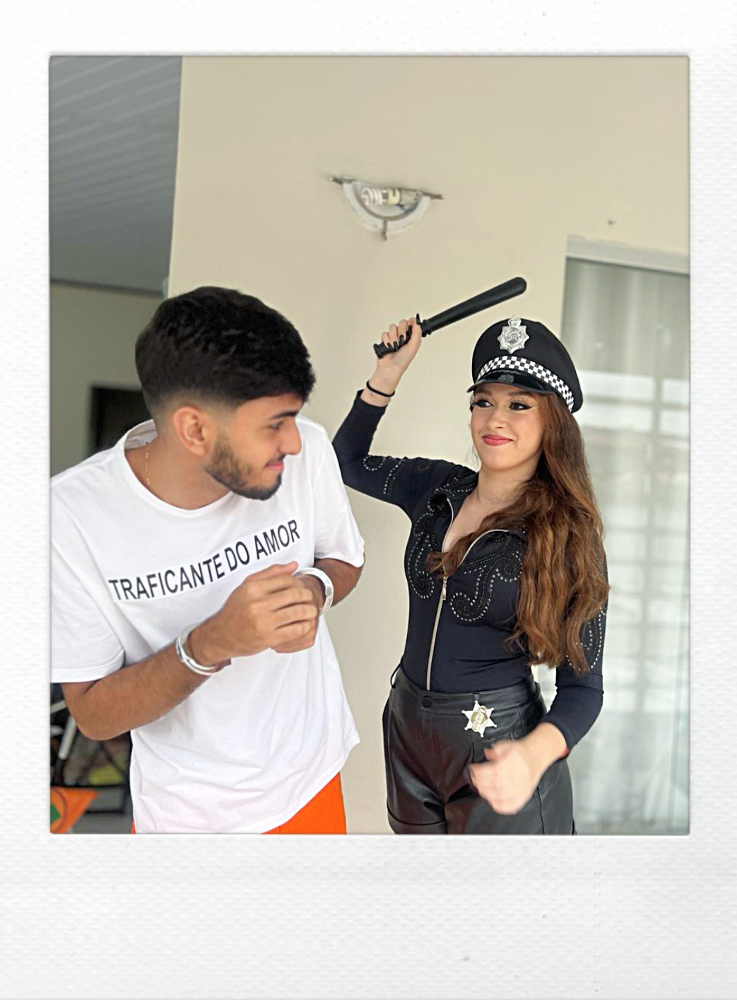
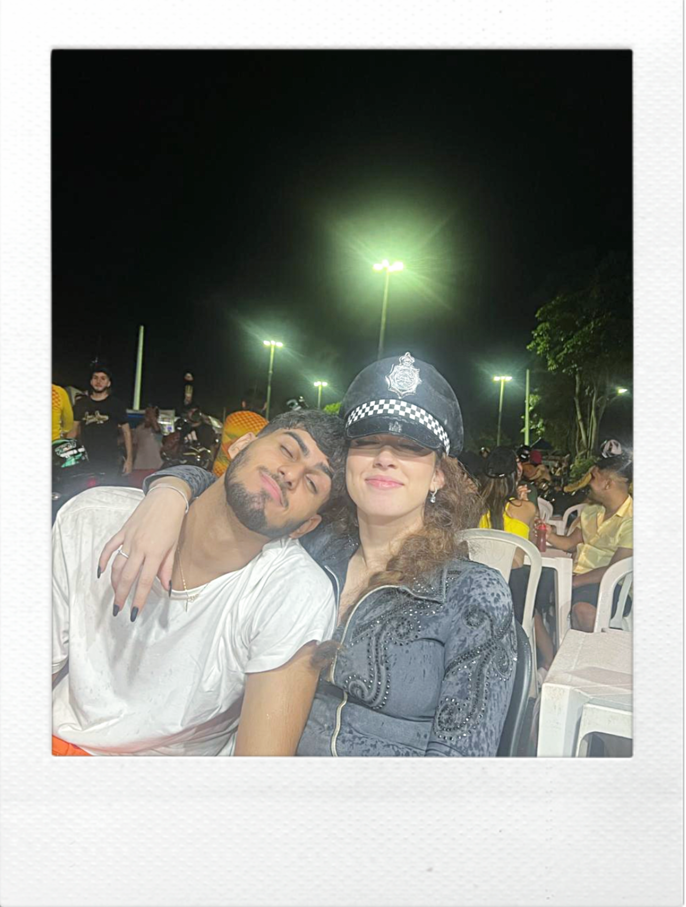
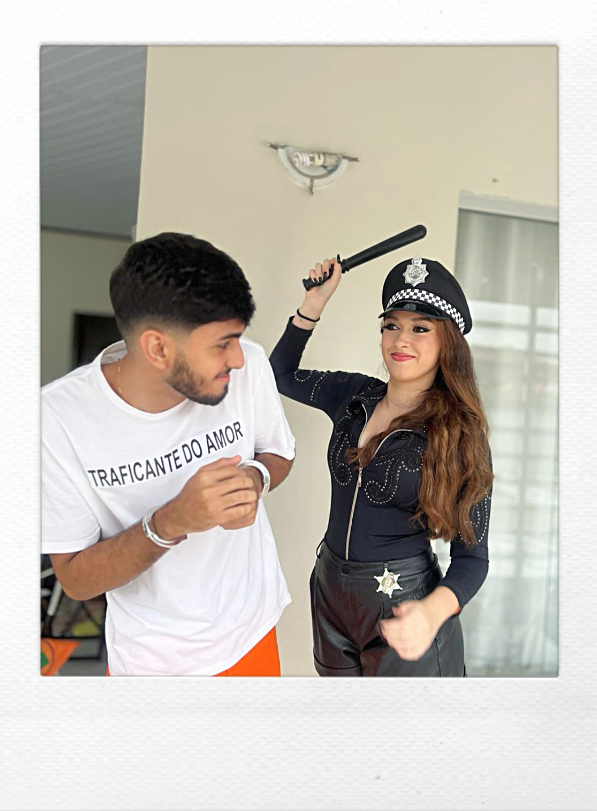
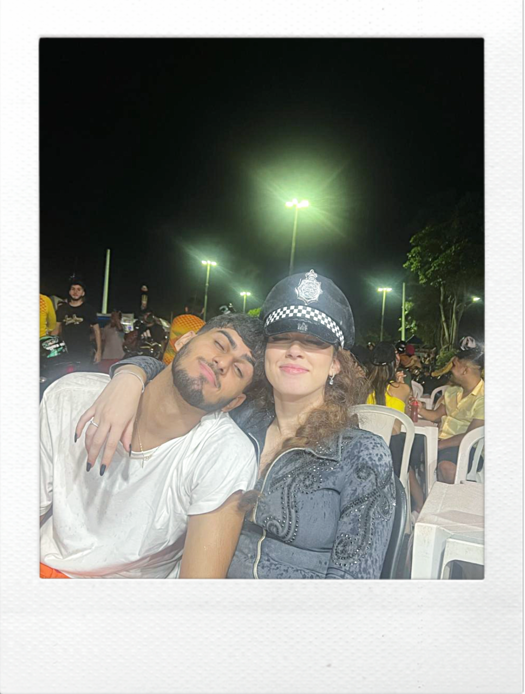
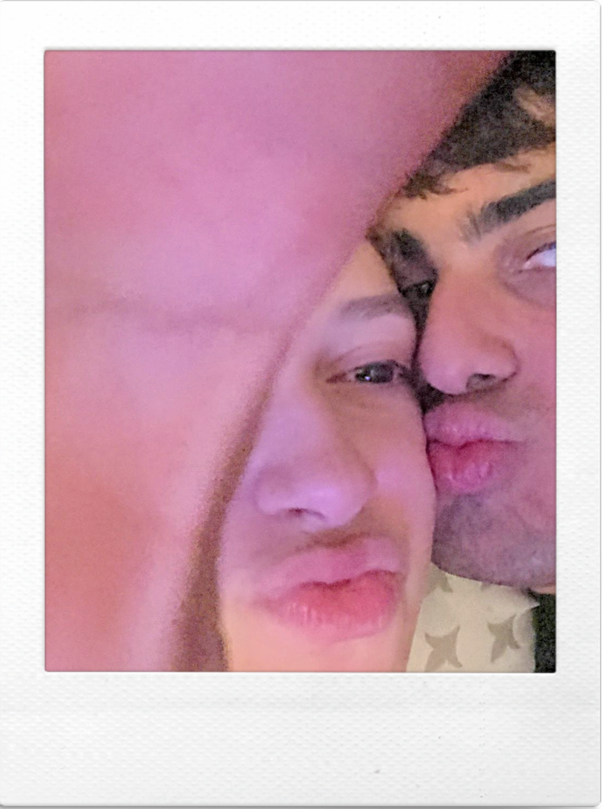
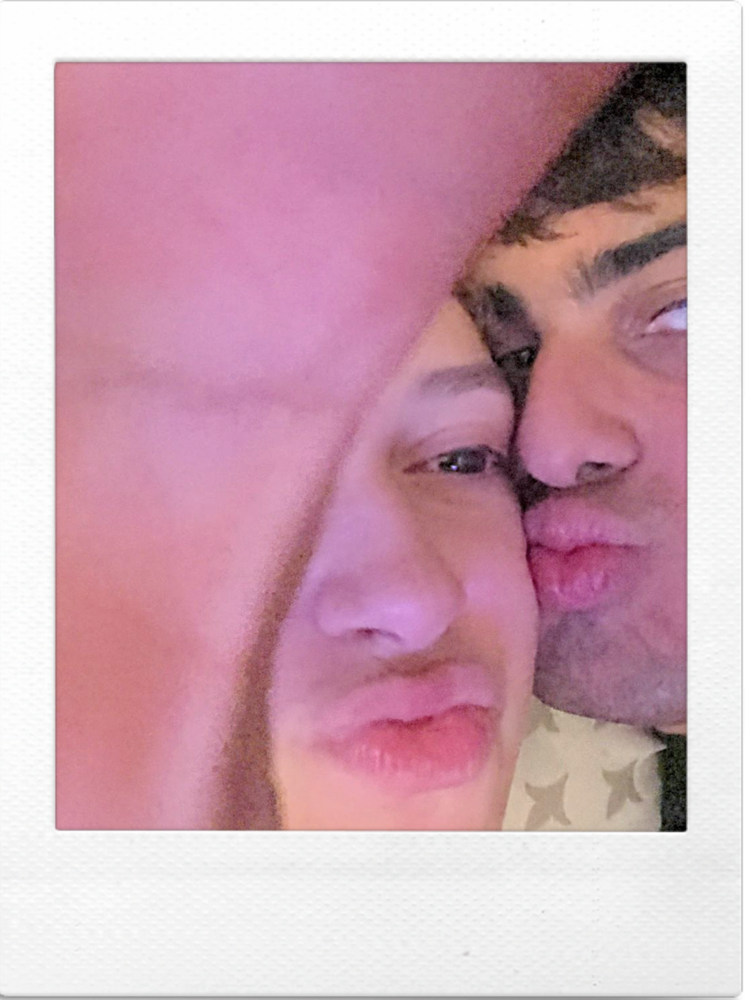
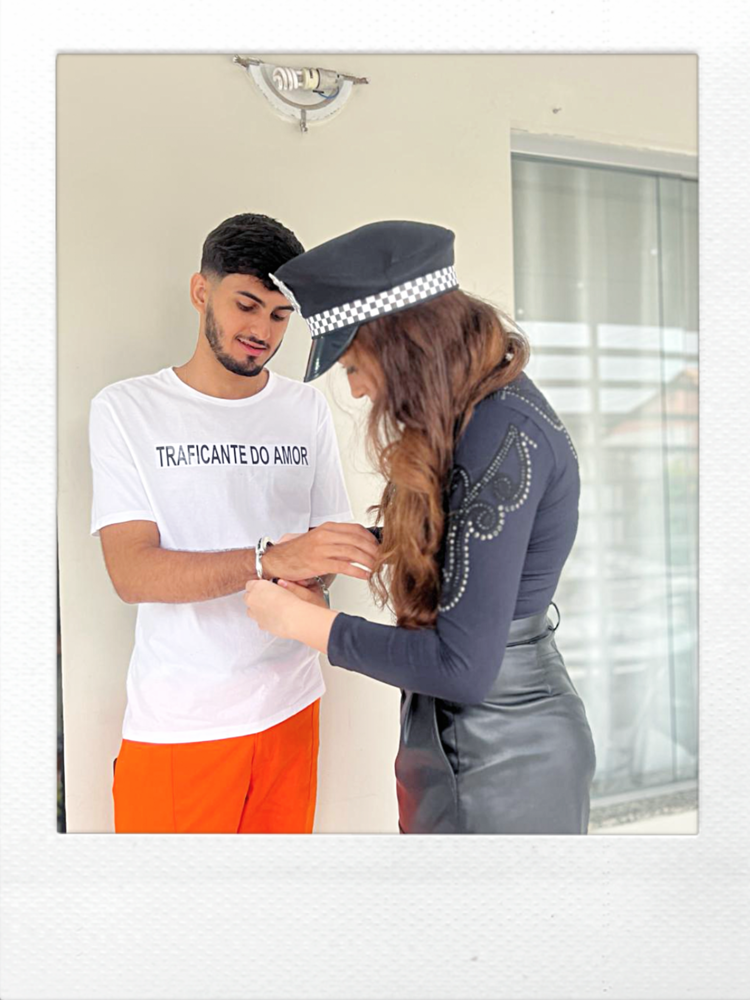
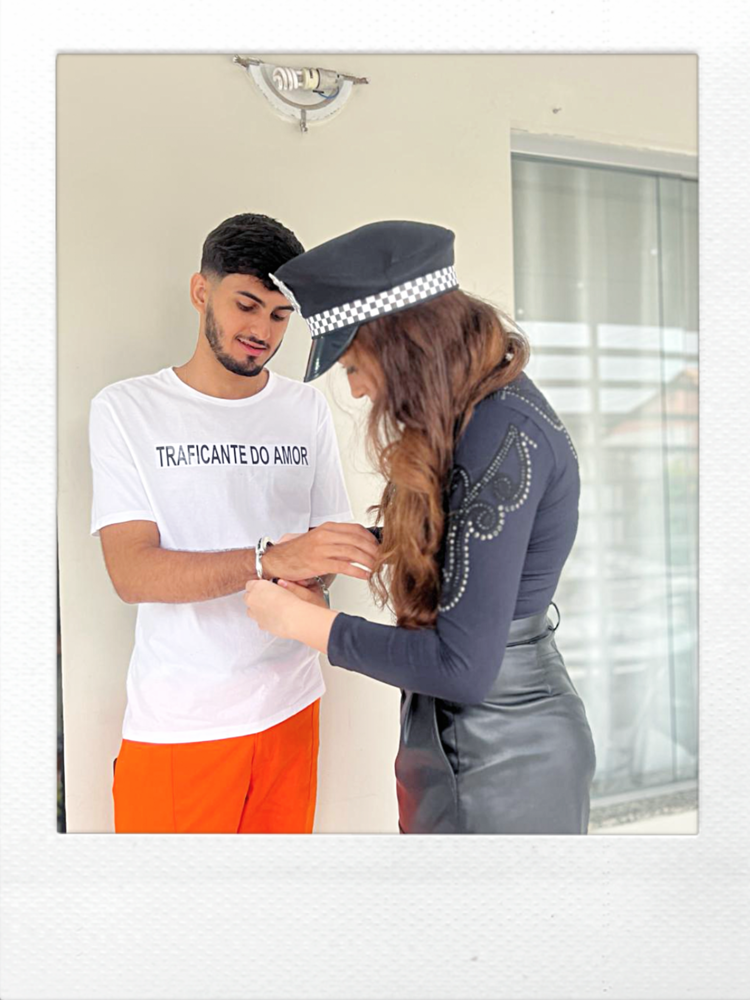

Acho que não tinha frase melhor pra começar esse site. Nunca imaginaria que por ter ido aquele beach tennis (que por sinal queria eu nem queria ir), me levasse a te conhecer.
Logo que te vi a primeira vez fiquei encantado com tamanho sorriso lindo, cabelos enrolados, e um olhar que só tu tens.
Falei pouco contigo aquele dia, descobri que não era de Bragança, mas a vontade de te conhecer era tanta que te caçei no instagram e começamos a conversar.
Tuas vindas pra Braganças eram poucas, mas cada vez que nos víamos, a vontade de nos vermos novamente só aumentava, tudo foi tão leve, e acho que por isso virou um sentimento tão bom entre a gente.
Dentre tuas idas e vindas pra Bragança fomos nos aproximando cada vez mais, até que dia 16/03/23 realmente me dei conta que gostava muito de ti, não "só um pouquinho", como costumava dizer por medo de me apegar demais
Felizmente, o sentimento falou mais forte, e dia 16/02/24 combinamos que tu se tornou minha primeira namorada, e eu o teu primeiro namorado, e foi assim, sem pedido na hora, nem flores, nem os dengos que tu tanto amas devido a distância, que começamos a namorar
Hoje, cá estamos, nos vendo de mês em mês, e sinceramente, tô feliz demais, Te amo muito minha galega


 


 
